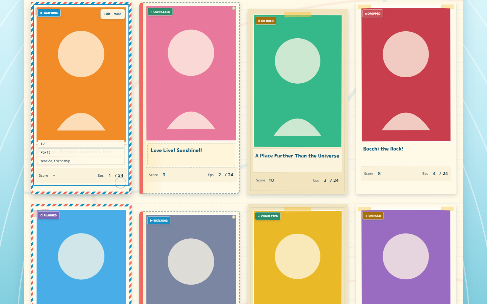
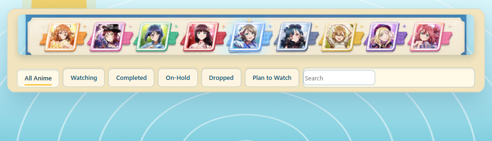

A working anime list recast as a sunlit travel journal, with tactile
cards, nine-member artwork, and the controls you still need to browse
and manage a real MAL list.
The visual language is playful, but the hierarchy stays practical:
artwork frames the list while title, score, progress, status, search,
filters, and owner actions remain easy to find.

Four ways to frame the same journey.
Polaroid, postcard, ticket pocket, and taped-photo cards keep every
entry equal while giving the page a little rhythm.

Still readable when the viewport narrows.
The compact header keeps navigation and search together instead of
turning the showcase into a dead-end poster.
Why it works
Decorative, without getting in the way.
Native first
MAL links, filters, editing, score, progress, and streaming controls stay functional.
Equal by default
No entry is arbitrarily featured; variation comes from framing and paper details.
Keyboard aware
Hover details also open through focus, with visible ocean-blue focus rings.
Fallback ready
The layout still reads clearly if remote artwork or optional fonts fail to load.